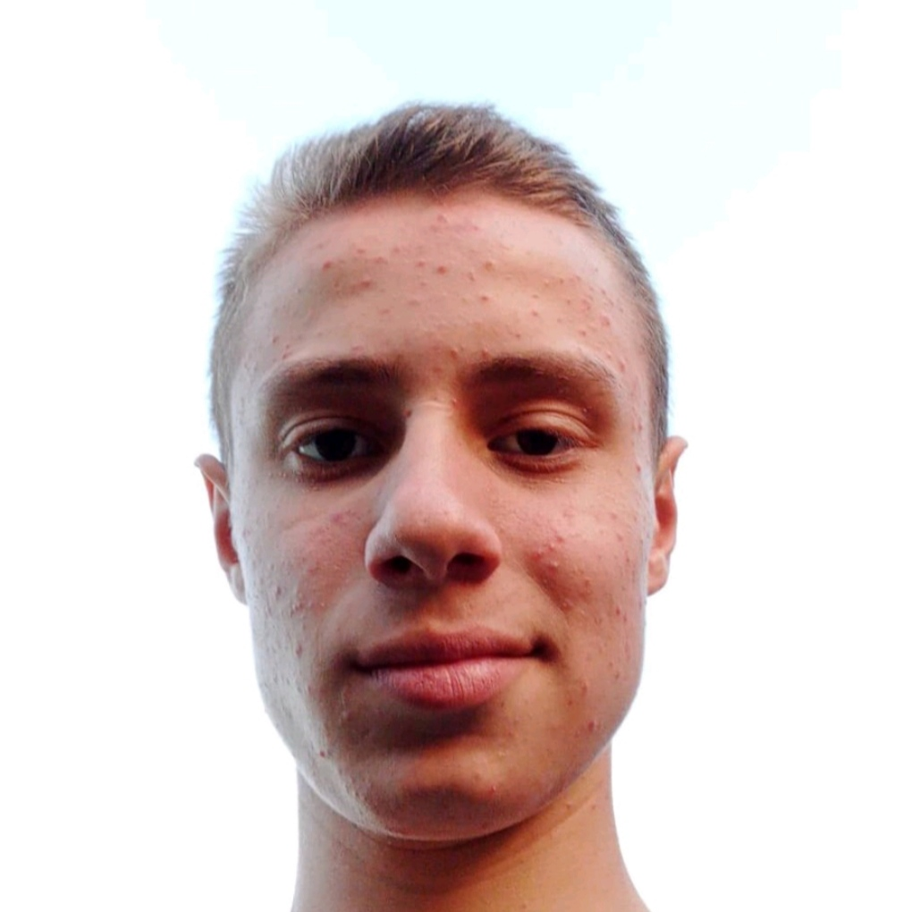

Zosim Dumitru
|
Economist Game-Tester Romanian, Russian +37376767380 dumitruzosim9@gmail.com MD, Forești, Prietenie 42 |
Abilitatea de a rezolva probleme complexe, adaptabilitate la schimbare, gestionare eficientă a sarcinilor și prioritizare, abilități de lucru în echipă și colaborare, comunicare eficientă verbală și în scris, gândire critică și analitică, capacitatea de a lua decizii în mod responsabil, abilități de planificare și organizare, creativitate și gândire inovatoare, orientare către rezultate și atingerea obiectivelor, respectarea termenelor limită și a regulilor de calitate, etică profesională și integritate personală. |